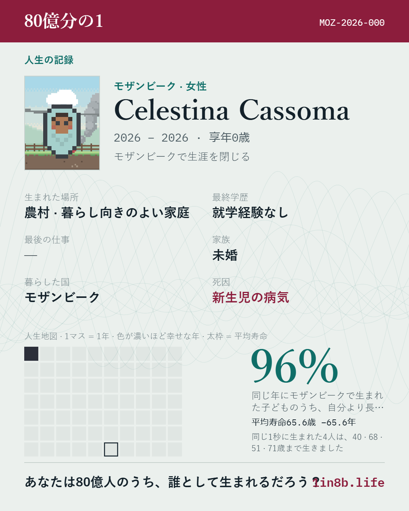

紅白歌合戦を観覧したくて抽選に申し込んだけれど、当落発表は12月。そこから飛行機を取るのは遅い気がするけど、そんな時期になってから取れる飛行機あるんだろうか？当選することなんてあるんだろうか？
紅白歌合戦を観覧したくて抽選に申し込んだけれど、当落発表は12月。そこから飛行機を取るのは遅い気がするけど、そんな時期になってから取れる飛行機あるんだろうか？当選することなんてあるんだろうか？
明日の最高気温10度らしい。一気に寒くなる。明日仕事でちょっとした発表があるので気が張っている。早く寝る
情報漏洩が盛んなので土日にアカウントを整理してたけど、今日ブックオフから情報漏洩した旨のメールが届いたので間に合ってなかった
NHKで「藏」が再放送されていることを思い出した。たぶん1話しか録画できていない。うーーー。次の再放送を待つしかない、、、
近所のおばとパン屋でモーニング。その後実家に行って、おみやげの餅を食べた
茶の間への日の入り具合が冬
お弁当に詰めたごはんが若干腐りかかっていた気がする
鮭の小骨がのどの奥に刺さって飲み込むたびに痛かったけれど、いつの間にか取れていた
階段を踏み外して右足を捻挫した。痛みに耐え出勤。痛いと思いながら労働。いってえとつぶやきながらなんとか家
図書館の本を予約した
X.comで流れてきた「80億分の1」をやってみた。モザンビークで生まれた。平均寿命が60歳代なのでゲーム終了まで60分くらいかかると表示されたので、その意気込みで始めたら1分で終わってしまった。

優しい人になりたい。場に馴染んでる感覚が欲しい。普通の人だと思われたい。むずかしい
大阪四季劇場でノートルダムの鐘を観劇。後半怒涛の展開。ストーリーを知らずに見たので、ディズニーアニメ版も見て比較してみたい。見終わったときに何も覚えてない感覚になるという観劇あるある。特に歌。何も口ずさめない。たぶんキャパオーバー
10月10日はJuice=Juiceの日！ということで、Juice=Juice Room Tour 2026 「5ROOMS」大阪夜公演を見てきて、今ホテル。前回のZeppでは気にならなかったけど、今回音が気になってしまったのでライブ用耳栓が欲しくなった
終業10分前に仕事を振られた。取りかかってみたが、不備があって進められない状態だったので早々に突き返した。あの状態で完了できると思ったんなら見通しが甘いし、できないと思いつつ振ったんなら性格が悪い。なめられたもんだとむしゃくしゃしたけど、自部署のぬるま湯に免じてこの感情を無視することにした
年中マスクして「風邪なんです」って言うやつ、メンタルやられてるだけだからな、自覚持てよ
食べるものを固定化しつつある。知らないもの食べるの苦手なのよね
壁掛け時計が遅れるようになったので電池交換したけれど、入ってた電池をバッテリーチェッカーに挟んだら残量あるのよね。時計以下の消費電力の電化製品って何があるの？こうして電池が溜まっていく
1990年生まれ、北海道在住、日記